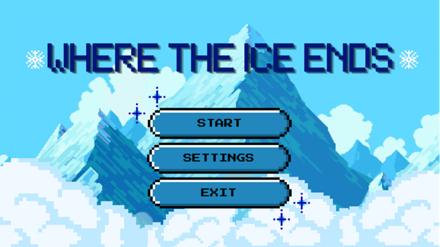
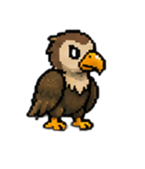
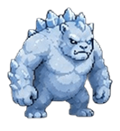

Where the ice ends
Where the Ice Ends je 2D avanturistički side-scroller u kojem igrač preuzima ulogu malog pingvina Vostyja, koji potaknut unutarnjim porivom, koji ni sam ne razumije, napušta svoje jato i kreće na opasno putovanje prema misterioznoj planini.
Žanr igre je 2D platformer s elementima akcije i avanture. Igra je namijenjena igračima starosti od 12 do 25 godina koji vole atmosferične igre s emotivnom pričom, ali je prikladna i za starije igrače.
Na putu prema planini Vosty prolazi kroz raznovrsna okruženja: ledene ravnice, zaleđena jezera, pukotine u ledu, područja s jakim olujama i strme planinske predjele.
Suočava se s grabežljivim pticama, tuljanima i ledenim stvorenijma, vrhunac igre je boss-fight na vrhu planine, gdje Vosty mora poraziti veliku ledenu neman po imenu Rupert koji predstavlja personifikaciju Vostyevih strahova i unutarnjeg nemira.

Galerija

